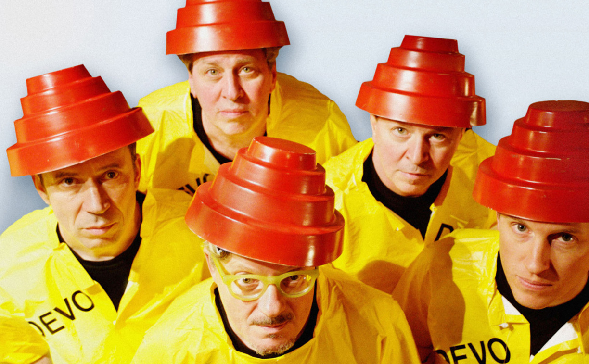

CTRL+D to bookmark
CTRL+D to bookmark

Well, what do you know, there are actually quite a few songs about pornography and they are all my favorite. I stumbled across this playlist because I am always scouring the web for anything porn related. No, I don’t have a problem, I just really love porn! Here are some tunes you should add to your fapping playlist if you’ve got one. If you don’t…start one! Once you do even just hearing any of these songs will get you in the mood.
1. Devo’s Penetration in the Centerfold was a classic rock hit the moment it hit the airwaves. It is all about how back in the 70’s when the song came out, every month there would be a new men’s magazine out with a chick spreading her pussy, and even though the guys were tired of the same old thing they would still put out the dough every time to get the goods because they wanted something exciting in their lives.

2. Van Halen’s Dirty Movies talks about every guy’s fantasy. The former popular hottie from back in the day is now a pornstar and what comes along with that. It’s a great song that will get your rocking and grinding no matter what you are doing.
3. Blowfly is a guy who is often looked over in the rap history books, but his song Porno Freak is one that should not be ignored. It is an early rap song that is truly about the joys of watching porn and jerking it off when you feel like doing it. He was really a legendary rap pioneer but unfortunately his work is often overlooked because of it’s completely adult content and hot porno friendly lyrics.
4. Sarah Silverman is usually a comedian but she wrote a song about porn for one of her shows on TV. It actually shows off her singing chops and it might make you laugh too. It’s not necessarily about porn per se, but more about people who like to have lots of sex and particularly anal sex.
5. Believe it or not, Elvis Costello’s song Satellite was partially about porn. It was about all the people watching porn at the same time and seeing someone’s point of view of sex. The lyrics are quite poetic and highlight the thrills of enjoying porn so much. It’s a song that is surprising when you find out it is about porn, but if you take a close look at the lyrics you will see that I’m not making it up.
So there you have it. Pop any of these songs onto your porno watching playlist and see the magic happen. I personally am obsessed with anything porn related so these songs have made me happy!